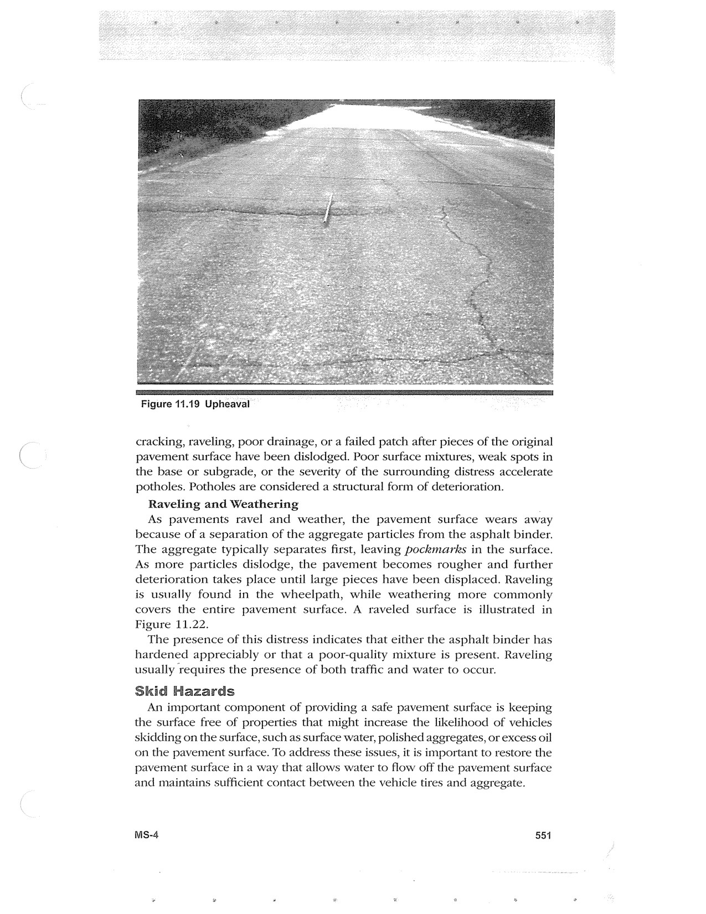

PDF page 585 · book page sequence 551


Searchable transcription
Unproofread OCR · 238 detected words; mean OCR confidence 95.35. Check technical values, symbols and table columns against the scan.
Figure 11.19 Upheaval -
cracking, raveling, poor drainage, or a failed patch after pieces of the original pavement surface have been dislodged. Poor surface mixtures, weak spots in the base or subgrade, or the severity of the surrounding distress accelerate potholes. Potholes are considered a structural form of deterioration.
Raveling and Weathering
As pavements ravel and weather, the pavement surface wears away because of a separation of the aggregate particles from the asphalt binder. The aggregate typically separates first, leaving pockmarks in the surface. As more particles dislodge, the pavement becomes rougher and further deterioration takes place until large pieces have been displaced. Raveling is usually found in the wheelpath, while weathering more commonly covers the entire pavement surface. A raveled surface is illustrated in Figure 11.22.
The presence of this distress indicates that either the asphalt binder has hardened appreciably or that a poor-quality mixture is present. Raveling usually requires the presence of both traffic and water to occur.
Skid Hazards
An important component of providing a safe pavement surface is keeping the surface free of properties that might increase the likelihood of vehicles skidding on the surface, such as surface water, polished aggregates, or excess oil on the pavement surface. To address these issues, it is important to restore the pavement surface in a way that allows water to flow off the pavement surface and maintains sufficient contact between the vehicle tires and aggregate.
MS-4 551